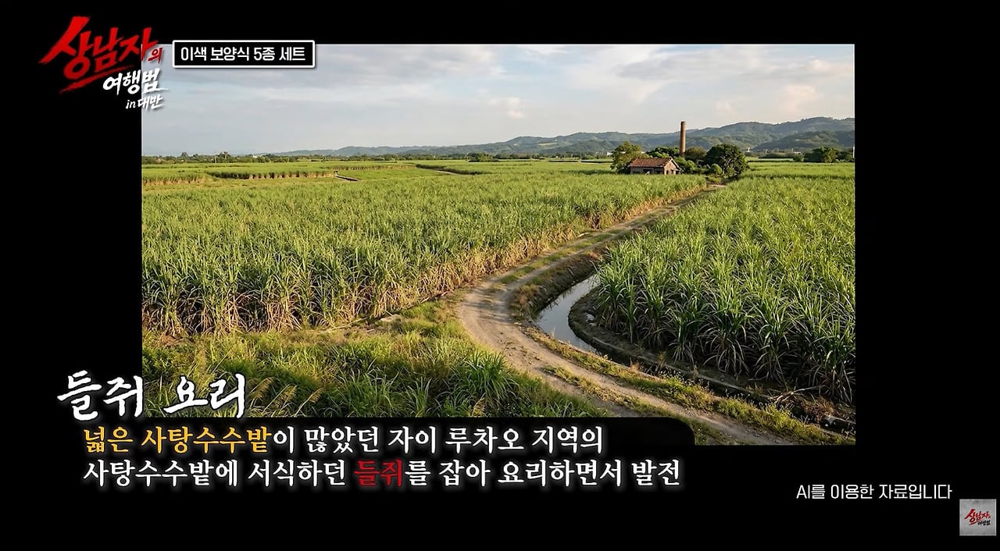
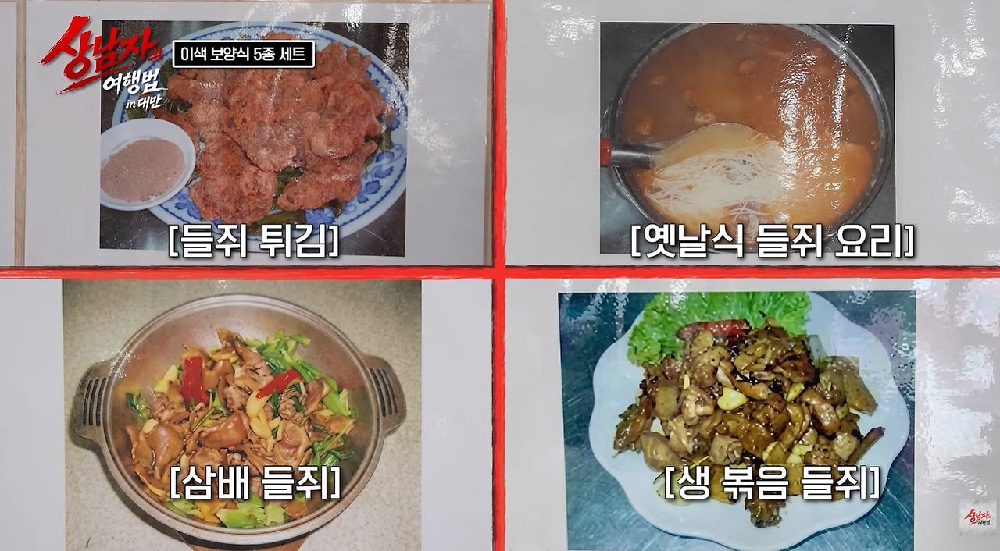
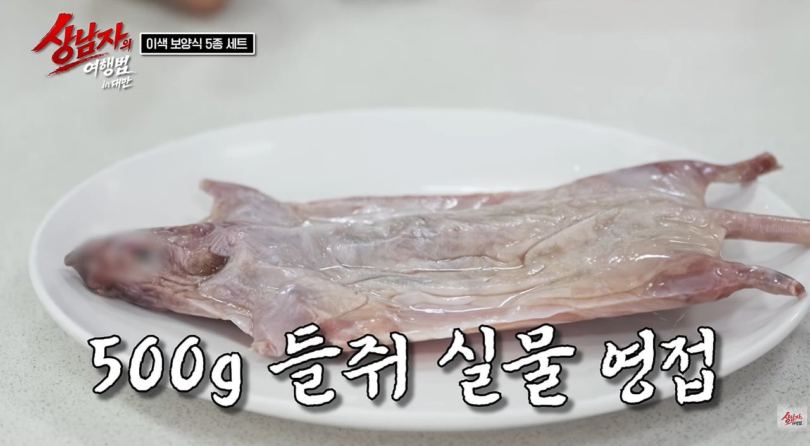
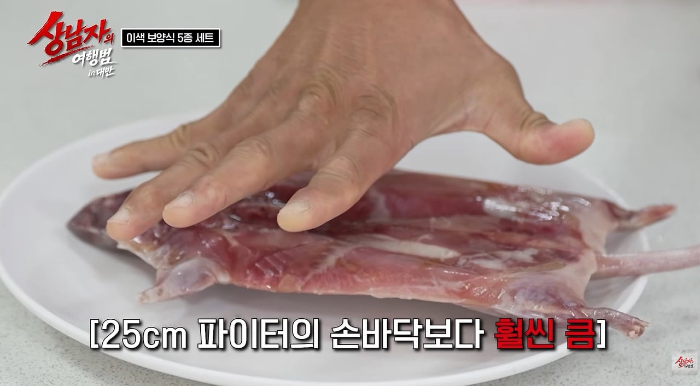
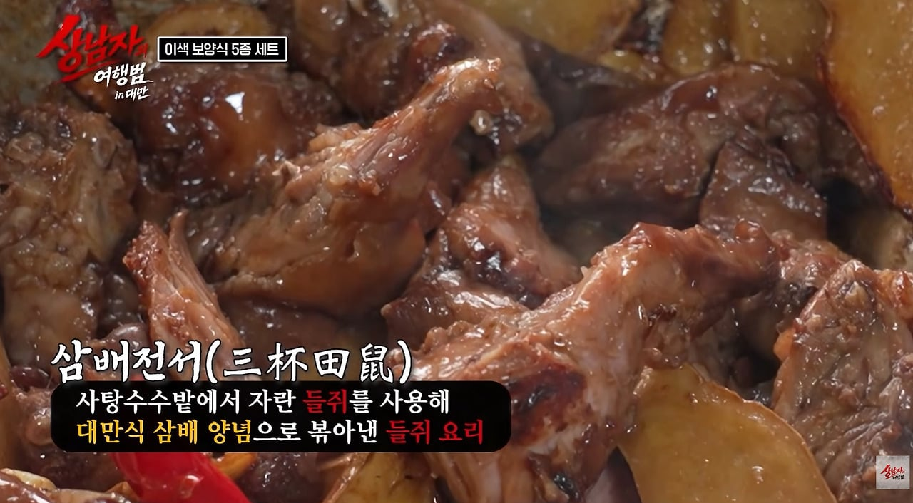

쥐고기 다판다
쥐쥐이야~
크기 보니까 Rat 계열인듯. 흔히 시궁쥐라 부르는 존나 큰 쥐...
방송에선 들쥐라는데.. 방송에서 찾아갈 정도면 어느정도 유명한 식당일텐데 시궁쥐를 들쥐라고 속여서 파나..?
래트라고 햄스터나 마우스같이 콩알만한거 말고 성인 남자 주먹 두개 이상으로 자라는 종이 따로 있음 시궁쥐류 그거 길러서 파나본데
바람의나라 시궁쥐가 고증이였어?
꼬렛이랑 레트라가 고증이었어 레트라는 존나 커
Mouse(생쥐) 라고 부르는 친구들은 건물 등지에서도 흔히 볼 수 있는데, Rat(시궁쥐)는 크기가 커서 보통은 밖에서 삼. 들에 살면 들쥐, 건물에 살면 시궁쥐임 ㅋㅋ
그걸 식용으로 팔아...? 도심에 사는 큰 쥐를 들쥐요리전문점에서? ㅅㅂ더러워
식용은 따로 카우지 임마
시궁창에서 주워와서 시궁쥐가 아니라 그냥 쥐 종류가 시궁쥐(Rat)임. 번역이 그렇게됨
찾아보니까 들쥐는 산, 들, 논밭 이런데서 사는 작은 개체가 들쥐고
도심, 하수구, 가옥 이런데서 사는 큰 개체가 시궁쥐라더라
제미나이피셜 시궁쥐가 140~500g이고 들쥐가 20~35g라는거보니 본문 저 쥐는 시궁쥐가 맞는듯........
도심, 하수구 이런데 사는 큰 쥐는 시궁창에서 주워온쥐랑 별반 다를거 없어보이는데 그걸 먹는다니 좀 드럽다....
아녀 시궁쥐라고 꼭 도시에서만 사는 건 아니고, Rat 이 사는곳이 보통 들판이나 습지등에 굴파놓고 살아서 그럼. 마찬가지로 도시 하수구나 지하에서 많이 사는 이유도 거기가 습하고 물이 많아서 그런거고. 논두렁에도 많이 살아
ㅇㅎ찾아보니까 저렇게 나오길래 도심에서 음쓰같은 사람음식 파먹고 사는 애들은 길고양이마냥 덩치가 큰가보다했네
덕분에 쥐공부했어 고마워ㅋㅋㅋㅋ

전염병 때문에 중국에서도 안먹는건데..
그건 북부쪽인거같음 북부쪽쥐는 작아서 고기사이즈가 별로라 인먹는것도 클거임
남부지방쪽은 보니깐 은근 쥐잡아서 (쉬궁쥐아니고 들쥐) 먹는사람 은근 있는듯
그냥 야생동물 일괄적으로 다 금지임.. 개인이 먹는거야 뭐 어쩔 수 없는데
특히 쥐/박쥐 같은게 전염병 발생률이 높아서 위험해
무슨 냄새인지 궁금하긴하네
꾸이구이
'삼쯔얼'이라고 새끼 쥐를 산 채로 장에 찍어먹는 음식도 있더라...
짱껀줄알았는데 대만꺼임?
그건 모르겠는데 그냥 들쥐 요리 하니까 생각나서...
대충 빙어회같은거 아닐까~
그렇게 생각하니 또 그럴싸하네
젓가락으로 집을때 한번
간장에 찍을 때 한번
입에 넣고 씹을 때 한번
세번 운다고 해서 산쯔얼 이라고 한대
기니피그도 식용이니까..
브라질에선 카피바라도 식용이라더라
먹어본 적 없어서 모르겠는 저 냄새가 ㅈㄴ 무섭다 ㅋㅋ
뭐 우리나라 번데기 생각하면 될려나
옛날 나 어릴 때 동네 영감 하나가 소주 댓병에 갓 낳은 생쥐를 넣어서 마시던거
쥐 나오니까 갑자가 생각나네 ㅆㅂ ㄷㄷㄷ

우마였나 베트남에서 쥐잡아다가 먹지않았나? ㅋㅋ
뭔들 안먹었을까 ㅋㅋㅋ
흰개미여왕만 기억남
대채 무슨냄새길래
뉴트리아는 맛있다던데 같은 맛아닌가
저거 양념은 존맛양념임
설치류가 의외로 먹을만하긴 하다지
익혀먹는다면 대부분 질병 예방이 가능하긴 할텐데
도축이나 위생이 영 믿음이 안가니...
우마가 쥐로 김쥐찌개 끓였었는데
바람의나라 쥐고기같네